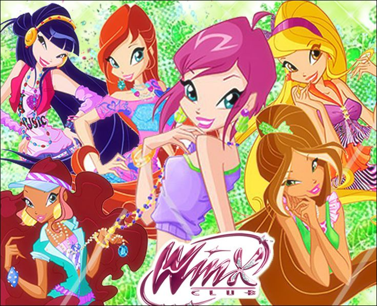

Клуб Винкс
«Клуб Винкс» (англ. Winx Club) — фантастический мультсериал производства Rainbow S.r.l., созданный по замыслу итальянского аниматора Иджинио Страффи[1]. Премьера состоялась 28 января 2004 года в Италии на канале Rai 2Перейти к разделу «Выход на телевидении». Действие происходит во вселенной, наполненной волшебством, вымышленными планетами и мифическими созданиями. В основе сюжетной линии мультсериала лежит история юной девушки Блум, её поиски правды о своём прошлом и о том, что случилось с её родной планетой и настоящими родителямиПерейти к разделу «Персонажи и мир сериала». Узнав, что у неё есть волшебные силы, Блум поступила в школу для фей и вместе со своими сокурсницами основала команду под названием «Клуб Винкс», чтобы вместе сражаться со злом. Идея создания мультсериала про девушек, наделённых волшебными силами, пришла Иджинио Страффи ещё в 2000 году на фоне популярности завершившегося на тот момент аниме-сериала «Сейлор Мун». Страффи объединил в сериале элементы «Сейлор Мун» и «Гарри Поттера», а для создания образа персонажей использовал кукол Барби и лица знаменитостейПерейти к разделу «Концепция и философия». Сериал затрагивает такие темы, как романтические отношения между девушками и юношами, подростковые переживания, отношения между родителями и детьмиПерейти к разделу «Критика и отзывы». Изначально сюжет был рассчитан только на три сезона и завершающий их полнометражный мультфильм, но из-за популярности сериала он был продлёнПерейти к разделу «Сюжет».
«Клуб Винкс» вышел на экраны более чем в 150 странах и собирал у экрана до 15 миллионов зрителей ежедневно, а продажи DVD превысили 22 миллиона копийПерейти к разделу «Успех и влияние». По мотивам мультсериала было выпущено три полнометражных мультфильма, два спин-оффа, ряд концертных и театральных постановок, американская адаптация от NetflixПерейти к разделу «Связанные проекты», а также брендированная продукция: куклы, книги, комиксы, видеоигры, канцелярские и школьные принадлежности, одежда, фирменная еда, гаджеты, велосипеды и другоеПерейти к разделу «Сопутствующие товары». Создатели многократно использовали персонажей сериала для различных акций, связанных со здравоохранением, охраной природы, образованием и туризмомПерейти к разделу «Успех и влияние». Сериал подвергся критике в ряде исследований за стереотипные образы персонажей. Как западные, так и российские авторы научных работ критикуют персонажей сериала за их идеализированные пропорции тел, подчёркнутую сексуальность героинь и демонстрацию романтических отношений, неприемлемую для детской аудитории. Кроме того, по мнению ряда исследователей, настоящие ценности уходят на второй план из-за броского внешнего вида главных героинь. Вместе с тем, западные исследователи выделяют в сериале воспроизведение гендерных стереотипов, в которых девушки изображены уязвимыми, а молодые люди предстают их защитниками. Российские же эксперты, напротив, считают, что мультсериал пропагандирует матриархальную форму отношений, в которой традиционные мужские и женские роли меняются местамиПерейти к разделу «Критика и анализ».
Сюжет
Шестнадцатилетняя земная девушка Блум встречает волшебницу Стеллу, от которой узнаёт, что, как и та, является феей. Поступив в Алфею — школу для фей, расположенную в измерении Магикс (иначе известном как Волшебное измерение), Блум узнаёт о существовании школы специалистов (юношей, осваивающих волшебные боевые искусства) и школы ведьм[2]. Столкнувшись с агрессией трёх ведьм — Айси, Дарси и Сторми, называющих себя Трикс, — Блум с подругами образовывают команду «Клуб Винкс», чтобы вместе сражаться со злом[3]. Девушки из клуба Винкс образуют пары с юношами из школы специалистов[4]: Блум и принц Скай, Стелла и Брендон, Муза и Ривен, Текна и Тимми. Трикс ищут источник волшебной силы Огня Дракона, при помощи которой хотят захватить Волшебное измерение. Они узнают, что Огнём Дракона обладает Блум, и отбирают у неё эту силу[5]. Блум выясняет, что у неё есть старшая сестра Дафна, которая превращена в духа и живёт на озере, земные родители Блум — приёмные, а сама она является принцессой разрушенной планеты Домино, хранившей Огонь Дракона. Трикс нападают на все три школы, но Блум возвращает силу и побеждает ведьм[5], после чего их отправляют в заключение[4].
Винкс пытаются помешать захватить мир злому божеству по имени Лорд Даркар[6], освободившему Трикс в обмен на служение ему. Даркар ищет волшебный кодекс[6], позволяющий получить мощную волшебную силу. Части кодекса спрятаны в школах магии и в поселении феечек пикси. Чтобы узнать местоположение поселения, Даркар держит группу пикси в плену. К Винкс присоединяется принцесса Лейла[K 1], пытавшаяся спасти феечек[7], и вместе они освобождают пленниц. Каждая Винкс связывается волшебными узами с одной из пикси. Героини осваивают трансформацию Чармикс, позволяющую использовать магию в тех местах, где простое волшебство не действует. Флора начинает встречаться с Гелией — внуком директора школы специалистов[K 2]. Даркару удаётся выкрасть все четыре части кодекса, и для получения его силы он заколдовывает Блум, вынуждая подчиняться ему. В последней битве девушку спасает Скай, признаваясь ей в любви[8]. Винкс уничтожают Даркара, а Трикс снова арестовывают.
Трикс отправляют в ссылку в ледяное измерение Омега, но они сбегают и освобождают Валтора — злого мага, который сражался против родителей Блум по приказу создавших его трёх древних ведьм. Винкс обучаются трансформации Энчантикс, с помощью которой можно использовать волшебную пыльцу, чтобы снимать тёмные заклинания. Пять героинь получили силу за самоотверженные поступки, а Блум получила её усилием воли и верой в победу над Валтором. Лейла начинает встречаться с Набу[9], за которого родители собирались выдать её замуж против её воли, но затем она поняла, что любит его[10]. Объединившись с Трикс, Валтор попытался захватить три школы магии, но потерпел неудачу в сражении с Винкс, и ведьмы-прародительницы навсегда забрали его человеческое обличье. Блум окончательно победила Валтора в астральной битве, а Трикс снова взяли под стражу. На протяжении сезона Блум продолжает поиски своих настоящих родителей. Сюжетная линия Блум получила дальнейшее развитие и завершение в полнометражных мультфильмах «Клуб Винкс: Тайна затерянного королевства»[11] и «Клуб Винкс: Волшебное приключение»[12].
Винкс пытаются помешать поймать последнюю земную фею четырём магам, которые столетиями охотились на фей Земли и заточали их на острове. Героини отправляются на Землю с целью защитить эту девушку, которую зовут Рокси[13]. Они получают трансформацию Беливикс[14] за то, что помогают Рокси поверить в себя и пробудить свои волшебные силы. В борьбе с магами Винкс обнаруживают место заточения земных фей и освобождают их. Феи Земли пытаются мстить людям за утрату веры в них, но Винкс останавливают их и убеждают судить магов. Маги заманивают фей и специалистов в ловушку, и в последовавшей битве Набу жертвует собой[15]. Жаждущая мести Лейла вместе с земной феей Небулой настигает магов в измерении Омега, где те замерзают и падают в пропасть. На Землю возвращается волшебство[15]. Рокси узнаёт, что является дочерью королевы земных фей Морганы. Моргана обещает Лейле присматривать за Набу[15], чью жизненную силу заключили в цветке.
Винкс сражаются с Тританнусом — принцем подводного мира планеты Андрос, который стал монстром из-за утечки нефти[15]. Тританнус превращает других тритонов в подчинённых ему монстров и с помощью Трикс пытается захватить власть в Бесконечном океане[16], объединяющем океаны всех планет. В арсенал Винкс добавляется трансформация Гармоникс, позволяющая сражаться в океане, и там они знакомятся с селки[17], с которыми связываются волшебными узами. Блум встречается с духом Дафны и узнаёт, что та обладает трансформацией Сиреникс, и что именно Сиреникс три древние ведьмы обратили против неё, превратив в духа, а её подругу Политею ― в чудовище. Пройдя испытание, Винкс получают Сиреникс и доступ в Бесконечный океан. Феи побеждают Тританнуса, и его ссылают в далёкое измерение. Вместе с тем, Трикс находят Политею и крадут её силу Сиреникса. В течение сезона Хранительницы Сиреникса предлагают Винкс исполнить по одному желанию, и Блум использует своё для того, чтобы вернуть Дафне телесный облик. События сюжетной линии о Тританнусе и Политее завершает полнометражный мультфильм «Клуб Винкс: Тайна морской бездны»[18].
Трикс объединяются с юной ведьмой Селиной, подругой детства Блум. Селина способна призывать сказочных монстров из книги Легендариум и хочет освободить тёмного колдуна Ашерона, заключённого в книге[19]. В сражении с Селиной Винкс теряют свои силы, и Блум даёт каждой фее часть своего Огня Дракона. Благодаря этой силе Винкс, совершая добрые и смелые поступки, добавляют к своим умениям трансформацию Блумикс[19]. Они отправляются на Землю в поисках феи Эльдоры, которая знает, как запечатать книгу. К способностям Винкс добавляется трансформация Мификс для доступа в мир Легендариума, и они отправляются туда на поиски предметов, составляющих ключ, которым можно закрыть книгу навсегда[19]. Селине удаётся освободить Ашерона, и тот начинает засасывать волшебную энергию Магикса в книгу. Блум побеждает Ашерона и восстанавливает волшебство Магикса. Селина раскаивается в своих поступках и закрывает Легендариум, в котором остаются Трикс. Дафна начинает преподавать в Алфее и выходит замуж за Торена — двоюродного брата Ская.
Хищная птица похищает последнего зверя редкого вида роеноров из заповедника Алфеи[20]. Винкс отправляются в прошлое, чтобы найти другого зверя, и узнают, что всех роеноров выкрали фея-оборотень Калшара и её брат Брафилиус[20], намеревающиеся заполучить Высшую Силу. Винкс спасают животных и осваивают трансформацию Баттерфликс[21]. Винкс используют свои силы, спасая редких животных, и объединяются волшебными узами с некоторыми из них[21]. Животные дают феям трансформацию Тайникс, позволяющую путешествовать по мини-мирам. Когда Винкс находят источник Высшей Силы в одном из мини-миров, его крадёт Брафилиус и случайно освобождает Трикс из Легендариума. Трикс одерживают верх над феями, но их волшебные животные становятся Лебедем Вечности и побеждают ведьм, после чего исчезают. Феям удаётся заточить Трикс в лимбе вне времени. Калшара погибает, упав в пропасть, а Брафилиус становится щенком и мирно живёт с другими животными под землёй.
На звёздах Волшебной вселенной обитают маленькие световые создания — люмены[22]. Арген, брат Дораны, королевы люменов, проникся завистью к сестре и сумел возродить Валтора. Валтор использует Аргена как слугу и крадёт энергию звёзд. Дорана даёт Винкс силу Космикс для защиты звёзд[22]. Попытавшись украсть у Блум силу Космикс, Валтор на время исчезает, поскольку Космикс отвергает его и отнимает бо́льшую часть сил[23]. Арген раскаивается и воссоединяется с сестрой. Валтор освобождает Трикс из лимба и заставляет служить ему[23]. По его приказу Трикс ловят Звезду Желаний, которая могла бы дать магу небывалое могущество, но та распадается на первичные звёзды, и Винкс соревнуются с Трикс и Валтором в их поисках. Во время поисков последней звезды Айси попадает на свою родную планету Даймонд. Выясняется, что у неё есть заколдованная сестра, и что они обе — принцессы Даймонда, который заморожен колдовством злой ведьмы. Айси не удаётся расколдовать сестру, но она помогает Винкс победить Валтора. Феи встречают Звезду Желаний и просят у неё сил всегда защищать мир и стоять на страже добра.